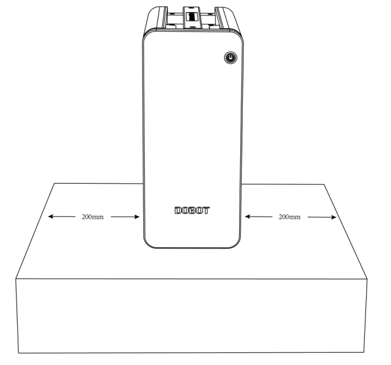

Cobot Installation and Mounting
Cobot Installation Environment
To ensure good performance and safety, please place the controller and robot in an environment with the following conditions:
- Install indoors in a room with good ventilation.
- Do not install in a closed environment.
- Keep away from direct sunlight.
- Keep away from dust, oil, smoke, salinity, metal powder, corrosive gases, and other contaminants.
- Keep away from flammable materials.
- Keep away from cutting and grinding fluids.
- Keep away from sources of electromagnetic interference.
- When the robot is installed, the robot must be fixed on a sufficiently strong base. The base must be able to withstand the reaction force of the robot during acceleration and deceleration and the static weight of the robot and the workpiece.
Controller Installation Environment
Place the controller on the horizontal surface outside robot’s workspace and reserve enough space for connecting cables and operating controller. Make sure there’s at least 200mm (~8in) on either side of the controller. Ensure there is nothing near the fan outlet for sufficient heat dissipation. The image below shows the installation space requirement.
Mounting Your Cobot
A standard industrial workbench may be a good way to mount an arm link the ones you can find at Global Industrial or Grainger. Another, more custom solution, is to use industrial dobot arm pedestals like the ones from Swivellink.
We provide Mounting Hole Templates for each arm, making it easy to drill the mounting holes at the exact right dimensions. You robot should be fixed to its platform using four hexagonal socket bolts tightened with a torque of 20Nm. The CR3 uses M6 bolts. The CR5, CR10, and CR16 all use M8 bolts.
Bear in mind that your mounting platform much be sturdy enough to handle not only the static forces when your robot is holding a heavy mass, but also the dynamic forces when the arm is moving at maximum speed and acceleration. If necessary, weight can be added to the platform or it can be bolted to the floor, wall, or other stationary support system.
If your setup requires the need to move the arm out of the way to access a machine or area the arm is blocking, we recommend creating a stationary solution which can be removed temporarily, but when replaced the exact location is kept in place. Floor markings, bolts, brackets, or railings can be used for such purposes.
Another area to consider is where to mount the arm on the platform and how much space you will need. Will you need bins on the platform, tool mounting stations, or a feeding tray or feeding rack? Plan out your work area to account for these items. You may want to buy multiple platforms to build out your area.
Mounting Hole Templates
Mounting hole templates are provided for each robot in PDF and DXF formats.
When printing a PDF template, you can choose the “Default” scale to print the page with real dimensions.